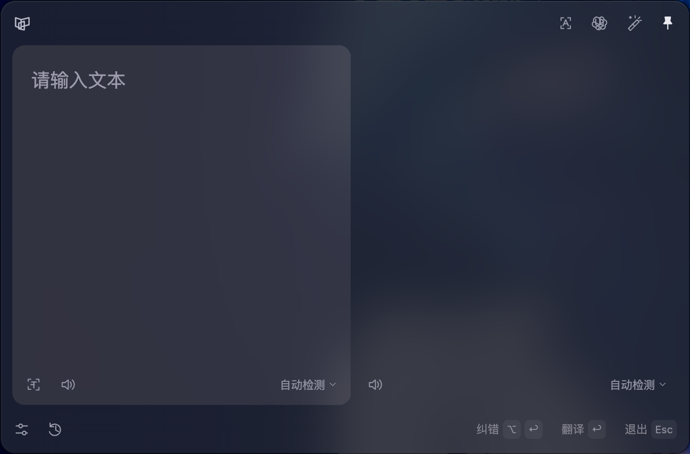
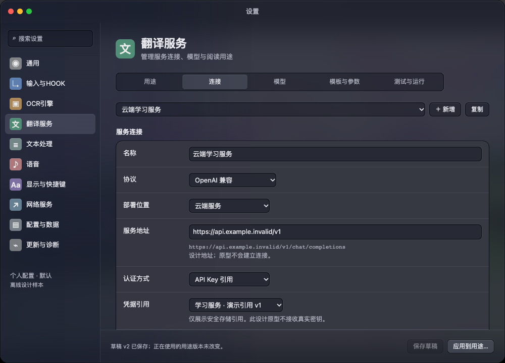
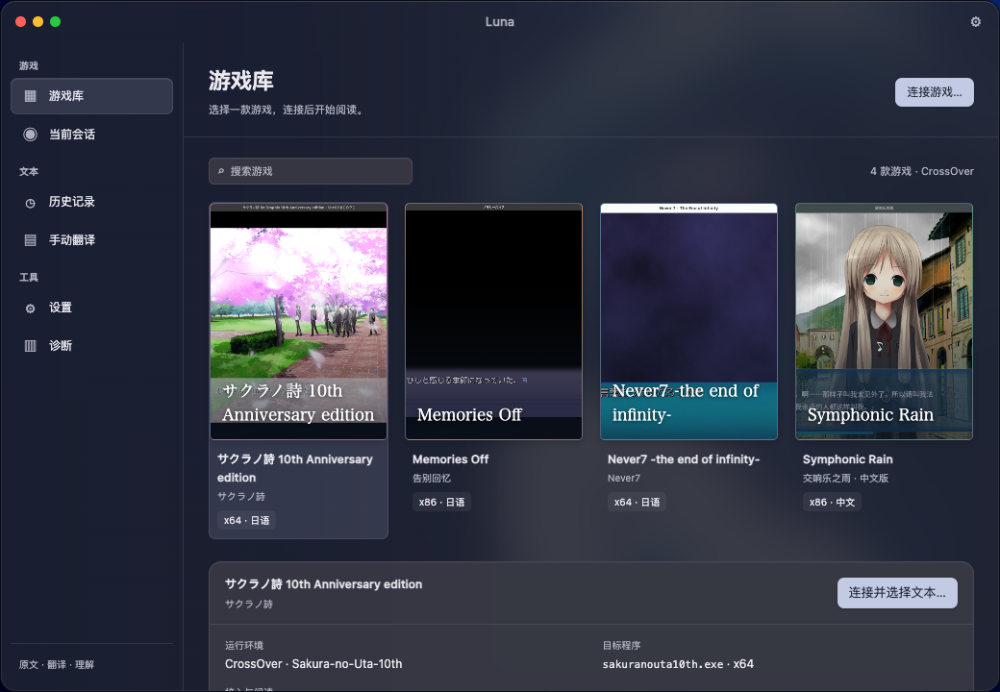
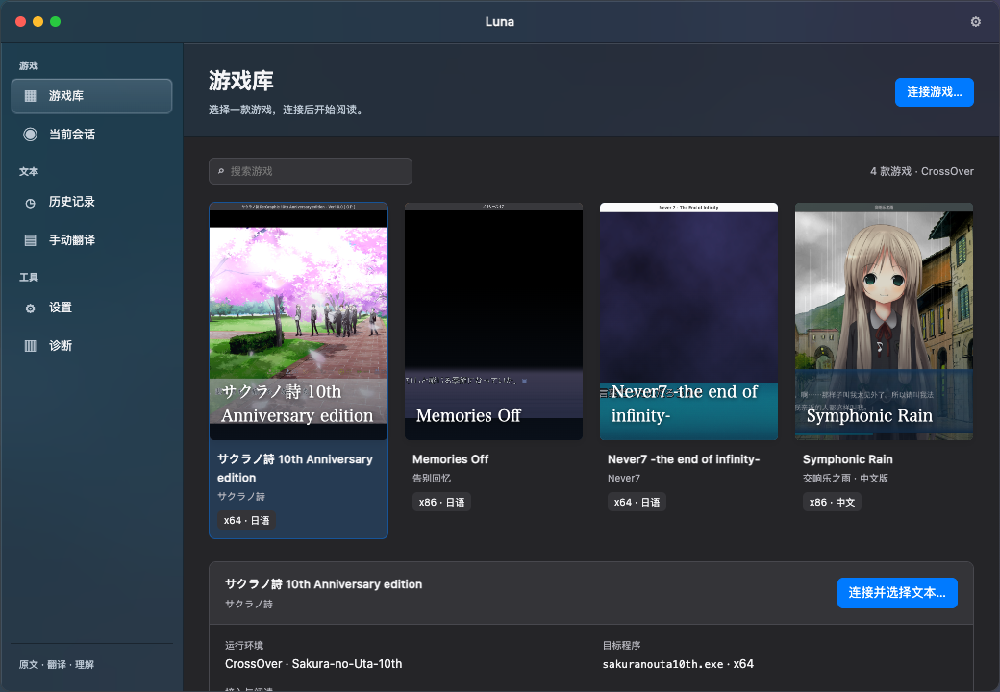
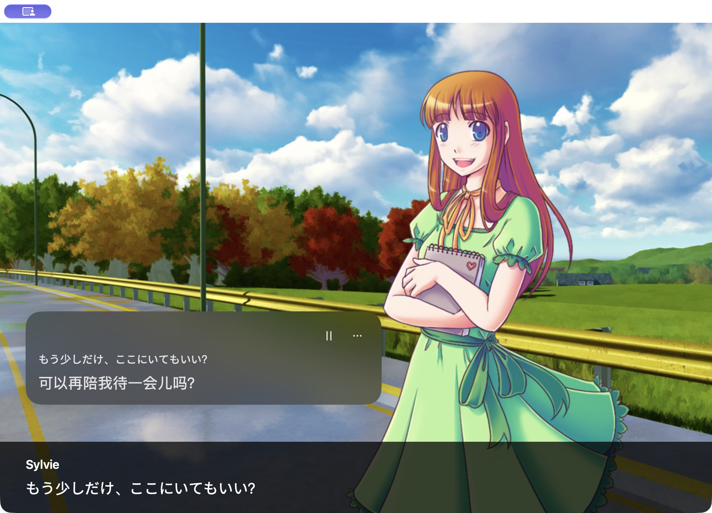
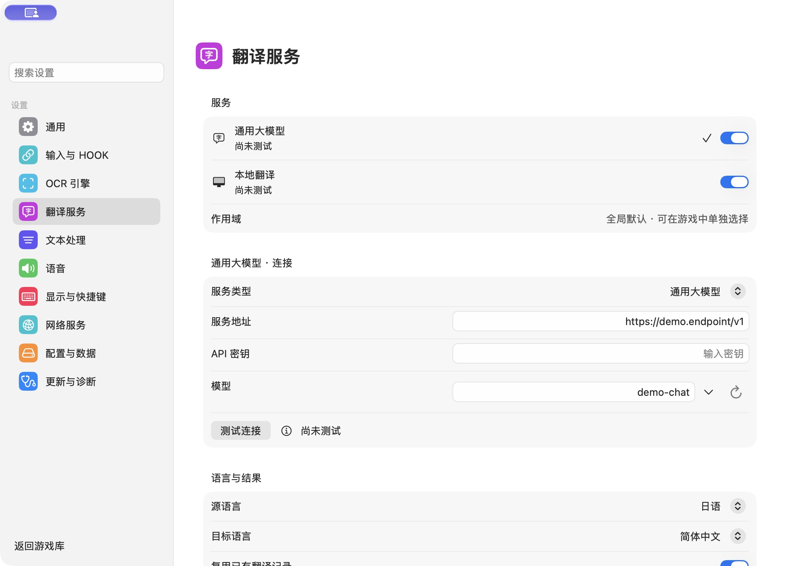
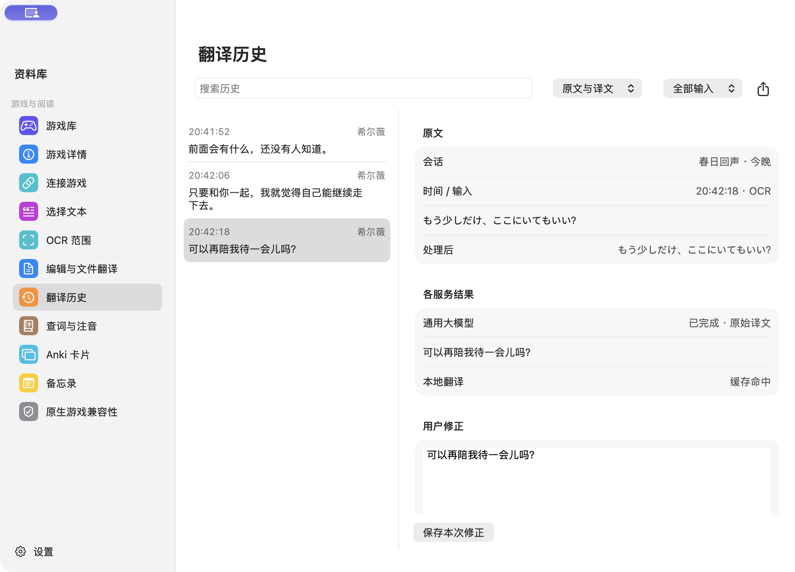

已确认案例与游戏库
整窗连续磨砂，侧栏与页头共享底层光影，内容区不再切成独立白底。


暗蓝灰连续窗体、较厚的中性灰内面、同族灰色线性图标、中性控件与细暗边界，均来自用户确认的独立案例。这里比较共同的视觉语言，页面内容不同，不将像素差异当作一致性评分。
整窗连续磨砂，侧栏与页头共享底层光影，内容区不再切成独立白底。

分类和工具图标统一为同一灰色线性SVG，不再使用彩色方块或Unicode符号；主按钮改为深灰底白字，选中与链接采用中性亮度。








当前默认采用已确认暗色。HTML表达材质视觉，原生窗口与正式产品仍按计划分别验证。
保留原文/译文层级、32pt安静操作行，材质统一为已确认暗色案例；舒适尺寸沿用此前v2提案，紧凑仍保留原500/16/22基线。


保留十类单层侧栏、分组Form与中性选中，视觉统一为已确认案例。新稿将连接/模型/用途和草稿/应用版本拆成真实可操作的数据关系。

继承列表/详情结构及原文译文的对应关系；补足重译来源、人工修改和保存失败的连续流程。
